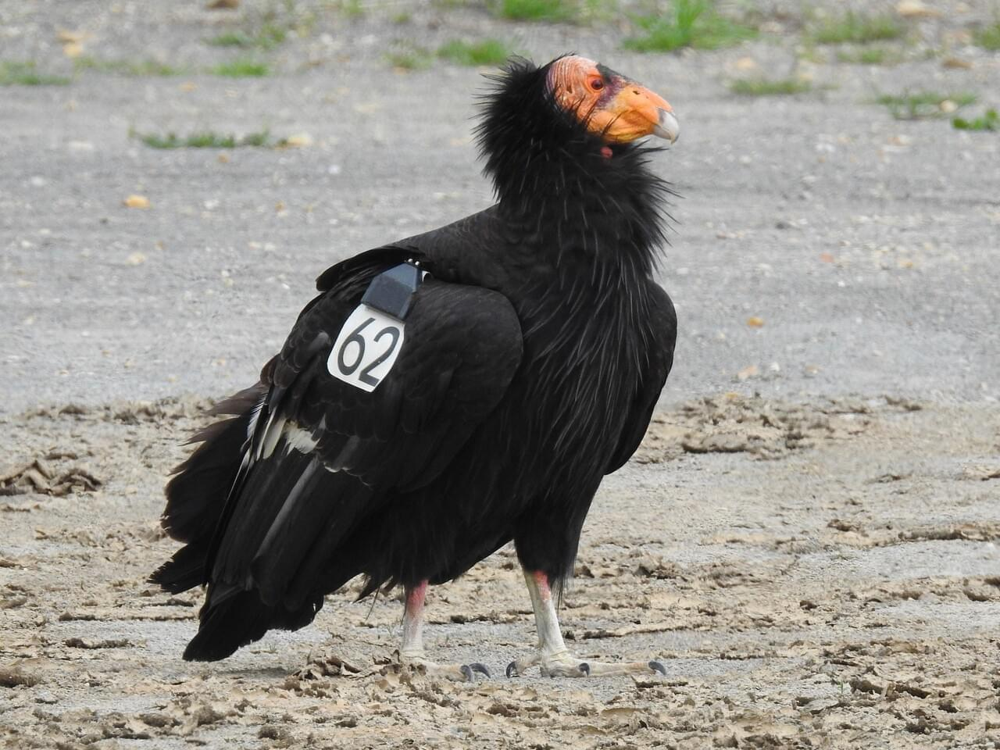

A key piece of the Pomodoro method is to take a break every 25 minutes...and you really should take those breaks! It is recommended
that you stop when your timer goes off, even if you are in a flow state in your work, to prevent burnout. This can mean
doing whatever is most relaxing or enjoyable for you, or whatever will allow you to recharge before your next pomodoro — eating a snack,
talking to a friend, or even just scrolling TikTok. One of my favorite relaxing activities is birdwatching, but you may not have time to
grab your binoculars and step outside during your short breaks. In lieu of that, please enjoy this gallery of some unique and interesting birds across the world.
Atlantic puffin
Brown-headed cowbird

California condor
Cedar waxwing
Glossy ibis
Gull-billed tern
Northern flicker
Wood duck
Prothonotary warbler
All images taken from and belonging to allaboutbirds.org.